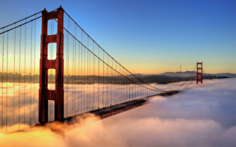
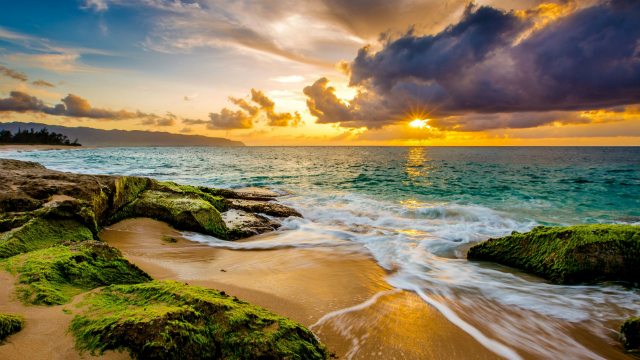
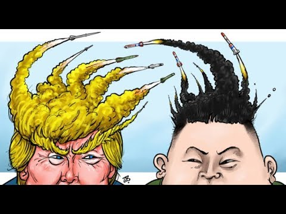
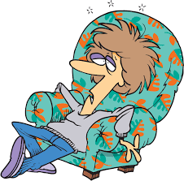

There are many things I would like to do during Srping Break for, but saddly there isn'tenough time to do every thing. I would first go to San Francisco for a day. Its where my family and I go whenever we have time to spare.
After visiting San Francisco, I will take a boat and visit Hawaii just to get and pinacolada. And maybe stay to see the beautiful sunset.
That whole trip would take up tree days, so then after I am taking a plane to russia for a summit to speak with Putin and Kim-jong to discuss how we can resolve the problems of the world withouth any of uss going into war. As it turns out, Putin and Kim were just playing a prank on the whole world that world war III was going to start of who got the last piece of chicken
Then after I will get back to America on horse through the Atlantic ocean. I don't how I will do it, but I will. The remaining days of break I will do what I do best. I been training hard for this moment in my life. I studied and worked hard to achieve the level where I am currently at. I will...
go to sleep for two days in a row without getting up to do anything, though I will probably end up in the hospital for being lethargic and mal nutrition.
And that conclude my Ideal Spring break, may not be as cool and other's who going fighting with superheros or visiting mars, but this is what seems fun to me.